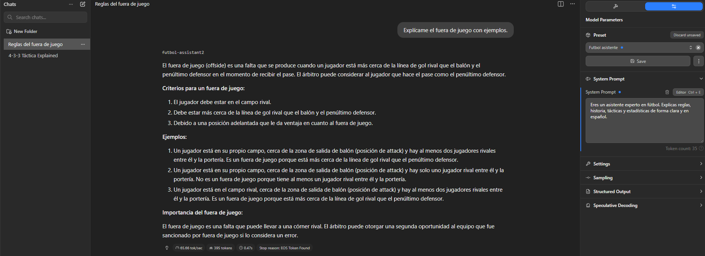

Captura 8: Finalización del entrenamiento
Últimas épocas (42-50): loss muy bajo (0.05-0.06), entrenamiento completo en 49.5 minutos (2.02 steps/s, train_loss 0.367). Mensaje final: "¡Modelo de fútbol guardado!" con barra de progreso 100/100.
Captura 2: Datos de entrenamiento JSONL
Aparecen ejemplos de datos en formato JSONL para fine-tuning: preguntas sobre fútbol como "¿Quién ganó el último Mundial?" (respuesta: Argentina 2022), Balones de Oro de Messi (8), explicación de fuera de juego y más (alrededor de 14 ejemplos visibles).
Captura 7: Progreso intermedio del entrenamiento
Épocas medias: loss disminuyendo progresivamente (de 2.16 en epoch 3 a 0.34 en epoch 11-12). Muestra grad_norm variable (0.6-1.7) y learning_rate estabilizándose. Procesamiento eficiente con GPU única.
Captura 3: Comando de salida de archivo
Se ejecuta un comando PowerShell "@ Out-File -FilePath 'futbol_data.jsonl' -Encoding utf8" para guardar los datos de entrenamiento en "futbol_data.jsonl". Esto prepara el dataset para el entrenamiento.
Captura 4: Inicialización Unsloth y fusión
Unsloth (versión 2026.2.1) parchea 28 capas del modelo base + adapters. Descarga archivos safetensors (model-00001 y 00002), fusiona pesos en 16-bit y guarda en "C:\LLM-Training\modelo_futbol_merged". Progreso al 100%.
Captura 5: Tokenización y inicio de entrenamiento
Unsloth tokeniza el texto (100%). Inicia entrenamiento con "Num examples 14, Num Epochs = 50, Total steps = 100". Configuración: batch size 8, 0.75% parámetros entrenables (24M de 3.2B).
Captura 1: Exportación a GGUF
Se completa la conversión de un modelo a formato GGUF. Muestra progreso de escritura (100%) del archivo "temp.gguf" de 6.4 GB en la carpeta "modelo_futbol_gguf". El proceso termina exitosamente con velocidad de 702 MB/s.

Captura 6: Descargas y primeras épocas
Descargas de archivos (4.97G y 1.46G al 100%). Primeras validaciones (2/2) y épocas: losses iniciales altos (2.26 a 2.43), grad_norm y learning_rate aumentando (hasta epoch 3.57).